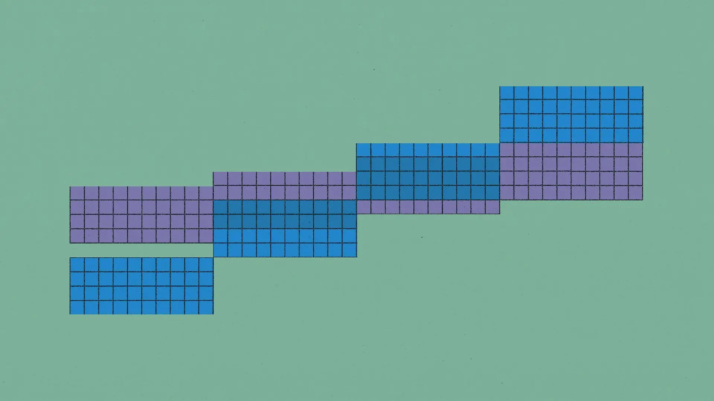
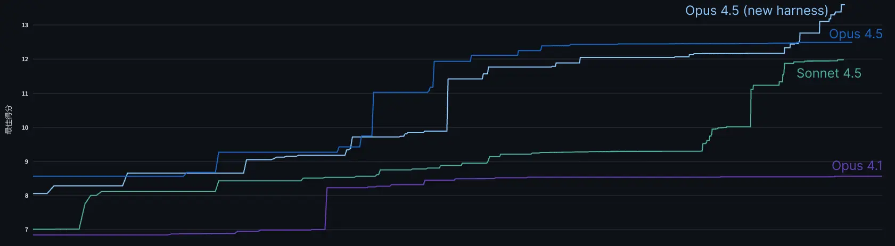
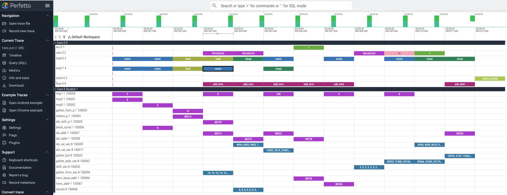
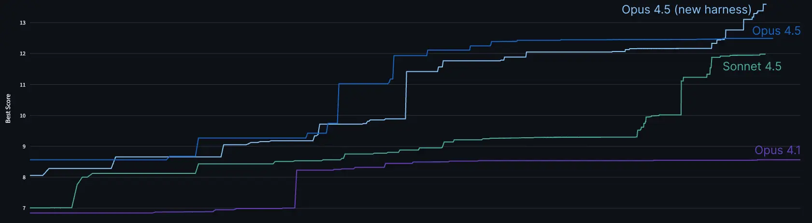

设计抗AI的技术评测
📖 中文摘要
专业术语注解
带回家测试（take-home）：候选人在无人监督、自选环境下限时完成的招聘题目VLIW：每周期有多个执行单元并行运行、要求高效打包指令的处理器架构SIMD：用单条指令对多个数据元素同时做向量运算暂存存储器（scratchpad）：需软件显式管理、而非由硬件缓存自动管理的内存测试时计算（test-time compute）：在推理阶段投入更多采样与搜索以提升表现📄 中文全文
- 类别： 工程（Engineering）
- 来源： https://www.anthropic.com/research/AI-resistant-technical-evaluations
工程（Engineering） 2026 年 1 月 21 日

已发布 2026 年 1 月 21 日 团队 工程 主题作者Tristan Hume，Anthropic性能优化团队负责人。Tristan设计并多次重新设计了这份带回家完成的测试，它帮助Anthropic招聘了数十名性能工程师。
相关内容
- 模型 2026 年 7 月 24 日 介绍Claude Opus 5
阅读更多 随着AI能力提升，评估技术候选人变得越来越难。一份今天能很好区分人类技能水平的带回家完成的测试（take-home），明天可能被模型轻松解出，从而失去评测价值。 自2024年初以来，我们的性能工程团队一直使用一份带回家完成的测试：候选人为一台模拟加速器优化代码。已有超过1,000名候选人完成过它，其中数十人如今在这里工作，包括让Trainium集群上线、并交付了Claude 3 Opus以来每一款模型的工程师。 但每一款新的Claude模型都迫使我们重新设计这份测试。在同样的时限下，Claude Opus 4的表现超过了多数人类申请者。这仍能让我们区分出最强的候选人——但随后Claude Opus 4.5连这些人也追平了。若给予无限时间，人类仍能胜过模型；但在该测试的约束下，我们再也找不到办法区分顶尖候选人的产出与我们最强模型的产出。 如今我已经把这份测试迭代了三个版本，试图确保它仍能带来有效信号。每一次，我都对什么能让评测在AI辅助下依然稳健、什么不能，有了新的认识。 这篇文章讲述最初的测试设计、每一款Claude模型如何击败它，以及为了让测试始终领先于我们最强模型的能力，我不得不采取的越来越不寻常的做法。虽然我们做的工作随模型一同演进，我们仍需要更多优秀的工程师——只是需要越来越有创意的方式去找到他们。 为此，我们把最初的测试作为公开挑战发布出来，因为在无限时间下，最优秀的人类表现仍超过Claude所能达到的水平。如果你能胜过Opus 4.5，我们很乐意收到你的来信——详情见文末。
这份测试的由来
2023年11月，我们正准备训练并发布Claude Opus 3。我们拿下了新的TPU和GPU集群，大型Trainium集群也即将到位，在加速器上的投入远超以往，但性能工程师的数量跟不上新的规模。我在Twitter上发帖邀请人们给我们发邮件，由此招来的优秀候选人多到标准面试流程根本评估不过来——而这套流程对员工和候选人都耗费大量时间。 我们需要一种更高效地评估候选人的方式。于是，我花两周时间设计了一份带回家完成的测试，既能充分体现岗位的要求，又能识别出最有能力的申请者。
设计目标
带回家完成的测试名声不佳。它们通常塞满工程师觉得乏味的通用题目，筛选效果也很差。我的目标不同：做出真正有吸引力的东西，让候选人乐于参与，并让我们能以高分辨率捕捉他们的技术能力。 在评估性能工程技能方面，这种形式相比现场面试还有若干优势： 更长的时间跨度： 工程师写代码时很少面对短于一小时的截止期限。4小时窗口（后来缩短为2小时）更贴近工作的实际性质。它仍短于多数真实任务，但我们需在这一点与它的负担之间取得平衡。 真实的环境： 无人旁观，也无需边做边讲解。候选人在自己熟悉的编辑器里不受打扰地工作。 留出理解与打造工具的时间： 性能优化需要理解现有系统，有时还要构建调试工具。在通常50分钟的面试里，这两点都难以真实评估。 与AI辅助兼容： Anthropic的通用候选人指引要求候选人在未另行说明时不得借助AI完成测试。对这份测试，我们明确另行说明、允许使用。 时间跨度更长的题目更难被AI完整解决，因此候选人可以像在岗位上那样使用AI工具，同时仍需展现自身的技能。 除这些与形式相关的目标外，我还把设计任何面试时遵循的同一套原则用于这份测试，使它做到： 代表真实工作： 题目应让候选人尝到这份工作实际包含什么。 高信噪比： 测试应避免依赖单一洞见的题目，确保候选人有多次机会展现全部能力——把偶然因素压到最低。它还应有宽泛的分数分布，并保证足够的深度，即便很强的候选人也无法做完所有内容。 无需特定领域知识： 基础扎实的人可以在岗位上学习具体细节。要求狭窄的专业知识会不必要地缩小候选人池。 有趣： 快速的开发循环、有深度的趣味题目，以及发挥创造力的空间。
模拟机器
我用Python为一台虚构加速器构建了模拟器，其特性类似TPU。候选人优化运行在这台机器上的代码，借助可热重载的Perfetto轨迹查看每一条指令，这与我们在Trainium上的工具类似。
这台机器包含让加速器优化变得有趣的若干特性：手动管理的暂存存储器（与CPU不同，加速器往往需要显式内存管理）、VLIW（每周期多个执行单元并行运行，要求高效地打包指令）、SIMD（单条指令对多个元素做向量运算），以及多核（把工作分配到各个核心）。
 任务是并行树遍历，刻意不带深度学习色彩，因为当时多数性能工程师尚未接触过深度学习，具体领域知识可以在岗位上补上。题目的灵感来自无分支SIMD决策树推理——一个向过去致意的经典机器学习优化难题，此前只有少数候选人遇到过。
候选人从一份完全串行的实现起步，逐步利用机器的并行性。热身是多核并行，随后候选人自行选择攻克SIMD向量化还是VLIW指令打包。最初版本还埋了一个bug，候选人须先把它调试出来，以此检验他们打造工具的能力。
任务是并行树遍历，刻意不带深度学习色彩，因为当时多数性能工程师尚未接触过深度学习，具体领域知识可以在岗位上补上。题目的灵感来自无分支SIMD决策树推理——一个向过去致意的经典机器学习优化难题，此前只有少数候选人遇到过。
候选人从一份完全串行的实现起步，逐步利用机器的并行性。热身是多核并行，随后候选人自行选择攻克SIMD向量化还是VLIW指令打包。最初版本还埋了一个bug，候选人须先把它调试出来，以此检验他们打造工具的能力。
早期效果
最初的测试效果很好。Twitter那一批里有人的得分明显高过其他所有人。他2月初入职，比我们通过标准流程招到的第一批人晚两周。这份测试被证明有预测力：他立刻开始优化内核，并为一个阻碍发布的编译器bug找到了变通办法——那个bug涉及张量索引运算溢出32位。 在接下来的一年半里，约1,000名候选人完成了这份测试，它帮助我们招到了现有性能工程团队的大多数成员。对简历上经验有限的候选人，它尤为宝贵：我们几位表现最出色的工程师是本科毕业后直接加入的，但在测试中展现出的技能足以让我们放心录用。 反馈很正面。许多候选人因为乐在其中，做到了超过4小时的时限。最强的无限时间提交里包含了完整的优化型迷你编译器，以及几处我未曾预料到的巧妙优化。
随后Claude Opus 4击败了它
到2025年5月，Claude 3.7 Sonnet已悄悄逼近这样一个临界点：超过50%的候选人还不如把任务完全交给Claude Code。随后我用一份预发布版的Claude Opus 4测试了这份测试。它在4小时时限内给出的方案，比几乎所有人类都更优化。 这不是我第一道被Claude模型击败的面试题。2023年我专门设计过一道现场面试题，因为当时我们的题目都围绕常见任务，早期Claude模型对此掌握大量知识、能轻松解出。我试图设计一道更依赖解题能力而非知识的题目，仍基于我在工作中解决过的一个真实（但小众）问题。Claude 3 Opus攻下了该题的第一部分，Claude 3.5 Sonnet攻下了第二部分。我们至今仍在使用它，因为其他现场面试题同样不抗AI。 对这份测试，有个直截了当的修补办法。题目的深度远超任何人在4小时内所能探索，于是我用Claude Opus 4找出它开始吃力的位置，把那里作为第2版的新起点。我写了更干净的初始代码，加入新的机器特性以增加深度，并去掉了多核（Claude早已解决它，而它只会拖慢开发循环、并不增加信号）。 我还把时限从4小时缩短到2小时。最初选4小时，是根据候选人的反馈：万一在某个bug或困惑上卡住一会儿，4小时能降低翻车风险；但排期开销让我们的招聘流程拖延数周。2小时更容易安排进一个周末。 第2版更强调巧妙的优化洞见，而非调试或代码量。它很好地服务了我们——长达数月。
随后Claude Opus 4.5又击败了它
测试一个预发布的Claude Opus 4.5检查点时，我看着Claude Code在这道题上工作了2小时，逐步改进方案。它解决了最初的瓶颈，实现了所有常见的微优化，并在不到一小时内达到我们的及格线。 随后它停了下来，确信自己撞上了无法逾越的内存带宽瓶颈。多数人也会得出同样结论。但确实有一些利用题目结构绕过该瓶颈的巧妙技巧。当我告诉Claude有可能达到的周期数后，它思考片刻便找到了那个技巧，接着调试、调参并实现了更多优化。到2小时节点，它的得分追平了该时限内最好的人类成绩——而那位人类大量使用了Claude 4并加以引导。 为更严谨，我们在内部测试时计算框架里试跑，确认它既能在2小时内胜过人类，又能随时间继续攀升。发布之后，我们甚至以通用方式改进了该框架，拿到了更高的分数。

我遇到了麻烦。我们即将发布一款模型，而在我们的测试上，最优策略将是把任务全权交给Claude Code。权衡各种选项
有同事建议禁止AI辅助。我不想这么做。除了执行上的难题，我有一种直觉：既然人类在我们的工作中仍扮演关键角色，就该能想出_某种_方式，让他们在_有AI的_环境里脱颖而出——就像他们在岗位上会遇到的那样。我还不愿轻易接受这种看法：人类只在耗时超过几小时的任务上才占优势。 另有人建议把门槛提高到"显著超过Claude Code单独能达到的水平"。此处的顾虑是Claude速度太快。人类通常把2小时中的一半花在阅读和理解题目上，之后才开始优化。试图引导Claude的人很可能始终慢半拍，只能在事后才弄明白Claude做了什么。占优策略或许会变成袖手旁观。 如今Anthropic的性能工程师仍有很多工作要做，但更像是棘手的调试、系统设计、性能分析、思考如何验证系统的正确性，以及思考如何让Claude的代码更简洁优雅。可惜，若没有大量时间或共同背景，这些事很难用客观方式考察。设计能代表岗位的面试向来不易，如今则比以往更难。 但我也担心，若投入精力设计一份新的测试，要么Claude Opus 4.5同样能解出，要么它会难到人类根本无法在两小时内完成。
尝试一：换一道优化题
我意识到Claude能帮我快速实现任何设计，这促使我试着开发一份更难的测试。我选了一道题，基于我在Anthropic做过的一项较棘手的内核优化：对2D TPU寄存器做高效的数据转置，同时避免存储体冲突。我把它提炼成模拟机器上一道更简单的题，并让Claude在不到一天内实现改动。 Claude Opus 4.5找到了一个我甚至没想过的绝佳优化。通过细致分析，它意识到与其琢磨如何转置数据，不如把整个计算过程转置过来，于是据此重写了整个程序。 在我遇到的真实场景里，这一招并不奏效，于是我修补题目、堵掉这条路径。Claude随后有所进展，却找不到最高效的解法。看起来我似乎有了新题目，只盼人类候选人能足够快地解出来。但我心里仍有些隐隐的不安，于是用Claude Code的"ultrathink"功能、给更长的思考预算再核对了一遍……它解出来了。它甚至知道修复存储体冲突的窍门。 事后看来，这道题选得不对。许多平台上的工程师都与数据转置和存储体冲突较过劲，Claude因而有大量训练数据可借鉴。我是从第一性原理找到解法的，而Claude能调用更庞大的经验工具箱。
尝试二：走向更怪异
我需要一道能让人类推理胜过Claude更庞大经验库的题：足够偏离分布之外。可惜，这与我"要明显像真实工作"的目标相冲突。 我想了想自己最喜欢的那类最不寻常的优化题，最终落在Zachtronics游戏上。这类编程解谜游戏使用奇特、高度受限的指令集，逼你用非常规方式编程。例如在Shenzhen I/O中，程序被拆分到多块互相通信的芯片上，每块只能容纳约10条指令和一两个状态寄存器。巧妙的优化往往是把状态编码进指令指针或分支标志里。 我设计了一份新测试，由使用极小且高度受限指令集的谜题组成，目标是让解法用到的指令数最少。我实现了一道中等难度的谜题，拿Claude Opus 4.5试了试，它失败了。我又补足更多谜题，并请同事验证：对题目浸淫不如我深的人，仍能胜过Claude。 与Zachtronics游戏不同，我刻意不提供任何可视化或调试工具。初始代码只检查解法是否有效。打造调试工具本身正是被考察的一部分：你可以插入精心设计的打印语句，也可以让编码模型在几分钟内生成一个交互式调试器。如何投入工具建设的判断力，也是信号的一部分。 我对这份新测试还算满意。它由更多相互独立的子问题构成，方差或许比最初版本更低。早期结果令人鼓舞：得分与候选人过往工作的水准高度相关，我一位能力极强的同事得分高过迄今任何候选人。 放弃了最初版本的真实感与层次丰富的深度，我仍有些怅然。但真实感也许已是我们不再拥有的奢侈品。最初版本奏效，是因为它像真实工作；替代版本奏效，是因为它模拟了全新的工作。
一项公开挑战
我们把最初版本的测试公开出来，任何人都可以在无限时间下尝试。在足够长的时间跨度上，人类专家相对当前模型仍保有优势。迄今提交的最快人类解法，大幅超过Claude即便借助大量测试时计算所能达到的水平。 发布的版本从零起步（与第1版一样），但采用第2版的指令集和单核设计，因此周期数可与第2版比较。 性能基准（以模拟机器的时钟周期计）： * 2164周期：Claude Opus 4在测试时计算框架中运行许多小时后 * 1790周期：Claude Opus 4.5在一次随意的Claude Code会话中，大致追平2小时内最好的人类成绩 * 1579周期：Claude Opus 4.5在我们的测试时计算框架中运行2小时后 * 1548周期：Claude Sonnet 4.5在远超2小时的测试时计算后 * 1487周期：Claude Opus 4.5在框架中运行11.5小时后 * 1363周期：Claude Opus 4.5在改进后的测试时计算框架中运行许多小时后
在GitHub上下载。如果你把周期数优化到1487以下、击败Claude发布时的最佳表现，请把代码和简历发到performance-recruiting@anthropic.com。 或者，你也可以通过我们的常规流程申请，它使用的是我们如今已抗Claude的测试。我们很好奇它还能撑多久。
▸ 英文原文（点击展开）
Designing AI-resistant technical evaluations
- Date: 2026-01-21
- Source: https://www.anthropic.com/research/AI-resistant-technical-evaluations
Designing AI-resistant technical evaluations
Published Jan 21, 2026 Team Engineering Topics
Written by Tristan Hume, a lead on Anthropic's performance optimization team. Tristan designed—and redesigned—the take-home test that's helped Anthropic hire dozens of performance engineers. Related articles * Models Jul 24, 2026 Introducing Claude Opus 5
View more Evaluating technical candidates becomes harder as AI capabilities improve. A take-home that distinguishes well between human skill levels today may be trivially solved by models tomorrow—rendering it useless for evaluation. Since early 2024, our performance engineering team has used a take-home test where candidates optimize code for a simulated accelerator. Over 1,000 candidates have completed it, and dozens now work here, including engineers who brought up our Trainium cluster and shipped every model since Claude 3 Opus. But each new Claude model has forced us to redesign the test. When given the same time limit, Claude Opus 4 outperformed most human applicants. That still allowed us to distinguish the strongest candidates—but then Claude Opus 4.5 matched even those. Humans can still outperform models when given unlimited time, but under the constraints of the take-home test, we no longer had a way to distinguish between the output of our top candidates and our most capable model. I've now iterated through three versions of our take-home in an attempt to ensure it still carries signal. Each time, I’ve learned something new about what makes evaluations robust to AI assistance and what doesn't. This post describes the original take-home design, how each Claude model defeated it, and the increasingly unusual approaches I've had to take to ensure our test stays ahead of our top model’s capabilities. While the work we do has evolved alongside our models, we still need more strong engineers—just increasingly creative ways to find them. To that end, we're releasing the original take-home as an open challenge, since with unlimited time the best human performance still exceeds what Claude can achieve. If you can best Opus 4.5, we’d love to hear from you—details are at the bottom of this post.
The origin of the take-home
In November 2023, we were preparing to train and launch Claude Opus 3. We’d secured new TPU and GPU clusters, our large Trainium cluster was coming, and we were spending considerably more than we had in the past on accelerators, but we didn't have enough performance engineers for our new scale. I posted on Twitter asking people to email us, which brought in more promising candidates than we could evaluate through our standard interview pipeline, a process that consumes significant time for staff and candidates We needed a way to evaluate candidates more efficiently. So, I took two weeks to design a take-home test that could adequately capture the demands of the role and identify the most capable applicants.
Design goals
Take-homes have a bad reputation. Usually they’re filled with generic problems which engineers find boring, and which make for poor filters. My goal was different: create something genuinely engaging that would make candidates excited to participate and allow us to capture their technical skills at a high-level of resolution. The format also offers advantages over live interviews for evaluating performance engineering skills: Longer time horizon: Engineers rarely face deadlines of less than an hour when coding. A 4-hour window (later reduced to 2 hours) better reflects the actual nature of the job. It's still shorter than most real tasks, but we need to balance that with how onerous it is. Realistic environment: No one watching or expecting narration. Candidates work in their own editor without distraction. Time for comprehension and tooling: Performance optimization requires understanding existing systems and sometimes building debugging tools. Both are hard to realistically evaluate in a normal 50 minute interview. Compatibility with AI assistance: Anthropic's general candidate guidance asks candidates to complete take-homes without AI unless indicated otherwise. For this take-home, we explicitly indicate otherwise. Longer-horizon problems are harder for AI to solve completely, so candidates can use AI tools (as they would on the job) while still needing to demonstrate their own skills. Beyond these format-specific goals, I applied the same principles I use when designing any interview to make the take-home: Representative of real work: The problem should give candidates a taste of what the job actually involves. High signal: The take-home should avoid problems that hinge on a single insight and ensure candidates have many chances to show their full abilities — leaving as little as possible to chance. It should also have a wide scoring distribution,and ensure enough depth that even strong candidates don't finish everything. No specific domain knowledge: People with good fundamentals can learn specifics on the job. Requiring narrow expertise unnecessarily limits the candidate pool. Fun: Fast development loops, interesting problems with depth, and room for creativity.
The simulated machine
I built a Python simulator for a fake accelerator with characteristics that resemble TPUs. Candidates optimize code running on this machine, using a hot-reloading Perfetto trace that shows every instruction, similar to the tooling we have on Trainium. The machine includes features that make accelerator optimization interesting: manually managed scratchpad memory (unlike CPUs, accelerators often require explicit memory management), VLIW (multiple execution units running in parallel each cycle, requiring efficient instruction packing), SIMD (vector operations on many elements per instruction), and multicore (distributing work across cores).

The task is a parallel tree traversal, deliberately not deep learning flavored, since most performance engineers hadn't worked on deep learning yet and could learn domain specifics on the job. The problem was inspired by branchless SIMD decision tree inference, a classical ML optimization challenge as a nod to the past, which only a few candidates had encountered before. Candidates start with a fully serial implementation and progressively exploit the machine's parallelism. The warmup is multicore parallelism, then candidates choose whether to tackle SIMD vectorization or VLIW instruction packing. The original version also included a bug that candidates needed to debug first, exercising their ability to build tooling.Early results
The initial take-home worked well. One person from the Twitter batch scored substantially higher than everyone else. He started in early February, two weeks after our first hires through the standard pipeline. The test proved predictive: He immediately began optimizing kernels and found a workaround for a launch-blocking compiler bug involving tensor indexing math overflowing 32 bits. Over the next year and a half, about 1,000 candidates completed the take-home, and it helped us hire most of our current performance engineering team. It proved especially valuable for candidates with limited experience on paper: several of our highest-performing engineers came directly from undergrad but showed enough skill on the take-home for us to hire confidently. Feedback was positive. Many candidates worked past the 4-hour limit because they were enjoying themselves. The strongest unlimited-time submissions included full optimizing mini-compilers and several clever optimizations I hadn't anticipated.
Then Claude Opus 4 defeated it
By May 2025, Claude 3.7 Sonnet had already crept up to the point where over 50% of candidates would have been better off delegating to Claude Code entirely. I then tested a pre-release version of Claude Opus 4 on the take-home. It came up with a more optimized solution than almost all humans did within the 4-hour limit. This wasn't my first interview defeated by a Claude model. I'd designed a live interview question in 2023 specifically because our questions at the time were based around common tasks that early Claude models had lots of knowledge of and so could solve easily. I tried to design a question that required more problem solving skill than knowledge, still based on a real (but niche) problem I'd solved at work. Claude 3 Opus beat part 1 of that question; Claude 3.5 Sonnet beat part 2. We still use it because our other live questions aren't AI-resistant either. For the take-home, there was a straightforward fix. The problem had far more depth than anyone could explore in 4 hours, so I used Claude Opus 4 to identify where it started struggling. That became the new starting point for version 2. I wrote cleaner starter code, added new machine features for more depth, and removed multicore (which Claude had already solved, and which only slowed down development loops without adding signal). I also shortened the time limit from 4 hours to 2 hours. I'd originally chosen 4 hours based on candidate feedback preferring less risk of getting sunk if they got stuck for a bit on a bug or confusion, but the scheduling overhead was causing multi-week delays in our pipeline. Two hours is much easier to fit into a weekend. Version 2 emphasized clever optimization insights over debugging and code volume. It served us well—for several months.
Then Claude Opus 4.5 defeated that
When I tested a pre-release Claude Opus 4.5 checkpoint, I watched Claude Code work on the problem for 2 hours, gradually improving its solution. It solved the initial bottlenecks, implemented all the common micro-optimizations, and met our passing threshold in under an hour. Then it stopped, convinced it had hit an insurmountable memory bandwidth bottleneck. Most humans reach the same conclusion. But there are clever tricks that exploit the problem structure to work around that bottleneck. When I told Claude the cycle count it was possible to achieve, it thought for a while and found the trick. It then debugged, tuned, and implemented further optimizations. By the 2-hour mark, its score matched the best human performance within that time limit—and that human had made heavy use of Claude 4 with steering. We tried it out in our internal test-time compute harness for more rigor and confirmed it could both beat humans in 2 hours and continue climbing with time. Post-launch we even improved our harness in a generic way and got a higher score.

I had a problem. We were about to release a model where the best strategy on our take-home would be delegating to Claude Code.Considering the options
Some colleagues suggested banning AI assistance. I didn't want to do this. Beyond the enforcement challenges, I had a sense that given people continue to play a vital role in our work, I should be able to figure out some way for them to distinguish themselves in a setting with AI— like they'd have on the job. I didn't want to give in yet to the idea that humans only have an advantage on tasks longer than a few hours. Others suggested raising the bar to "substantially outperform what Claude Code achieves alone." The concern here was that Claude works fast. Humans typically spend half the 2 hours reading and understanding the problem before they start optimizing. A human trying to steer Claude would likely be constantly behind, understanding what Claude did only after the fact. The dominant strategy might become sitting back and watching. Nowadays performance engineers at Anthropic still have lots of work to do, but it looks more like tough debugging, systems design, performance analysis, figuring out how to verify the correctness of our systems, and figuring out how to make Claude's code simpler and more elegant. Unfortunately these things are tough to test in an objective way without a lot of time or common context. It's always been hard to design interviews that represent the job, but now it's harder than ever. But I also worried if I invested in designing a new take-home, either Claude Opus 4.5 would solve that too, or it would become so challenging that it would be impossible for humans to complete in two hours.
Attempt 1: A different optimization problem
I realized Claude could help me implement whatever I designed quickly, which motivated me to try developing a harder take-home. I chose a problem based on one of the trickier kernel optimizations I'd done at Anthropic: an efficient data transposition on 2D TPU registers while avoiding bank conflicts. I distilled it into a simpler problem on a simulated machine and had Claude implement the changes in under a day. Claude Opus 4.5 found a great optimization I hadn't even thought of. Through careful analysis, it realized it could transpose the entire computation rather than figuring out how to transpose the data, and it rewrote the whole program accordingly. In my real case, this wouldn't have worked, so I patched the problem to remove that approach. Claude then made progress but couldn't find the most efficient solution. It seemed like I had my new problem, now I just had to hope human candidates could get it fast enough. But I had some nagging doubt, so I double-checked using Claude Code's "ultrathink" feature with longer thinking budgets ... and it solved it. It even knew the tricks for fixing bank conflicts. In hindsight, this wasn't the right problem to try. Engineers across many platforms have struggled with data transposition and bank conflicts, so Claude has substantial training data to draw on. While I'd found my solution from first principles, Claude could draw on a larger toolbox of experience.
Attempt 2: Going weirder
I needed a problem where human reasoning could win over Claude's larger experience base: something sufficiently out of distribution. Unfortunately, this conflicted with my goal of being recognizably like the job. I thought about the most unusual optimization problems I'd enjoyed and landed on Zachtronics games. These programming puzzle games use unusual, highly constrained instruction sets that force you to program in unconventional ways. For example, in Shenzhen I/O, programs are split across multiple communicating chips that each hold only about 10 instructions with one or two state registers. Clever optimization often involves encoding state into the instruction pointer or branch flags. I designed a new take-home consisting of puzzles using a tiny, heavily constrained instruction set, optimizing solutions for minimal instruction count. I implemented one medium-hard puzzle and tested it on Claude Opus 4.5. It failed. I filled out more puzzles and had colleagues verify that people less steeped in the problem than me could still outperform Claude. Unlike Zachtronics games, I intentionally provided no visualization or debugging tools. The starter code only checks whether solutions are valid. Building debugging tools is part of what's being tested: you can either insert well-crafted print statements or ask a coding model to generate an interactive debugger in a few minutes. Judgment about how to invest in tooling is part of the signal. I'm reasonably happy with the new take-home. It might have lower variance than the original because it comprises more independent sub-problems. Early results are promising: scores correlate well with the caliber of candidates' past work, and one of my most capable colleagues scored higher than any candidate so far. I'm still sad to have given up the realism and varied depth of the original. But realism may be a luxury we no longer have. The original worked because it resembled real work. The replacement works because it simulates novel work.
An open challenge
We're releasing the original take-home for anyone to try with unlimited time. Human experts retain an advantage over current models at sufficiently long time horizons. The fastest human solution ever submitted substantially exceeds what Claude has achieved even with extensive test-time compute. The released version starts from scratch (like version 1) but uses version 2's instruction set and single-core design, so cycle counts are comparable to version 2. Performance benchmarks (measured in clock cycles from the simulated machine): * 2164 cycles : Claude Opus 4 after many hours in the test-time compute harness * 1790 cycles : Claude Opus 4.5 in a casual Claude Code session, approximately matching the best human performance in 2 hours * 1579 cycles : Claude Opus 4.5 after 2 hours in our test-time compute harness * 1548 cycles : Claude Sonnet 4.5 after many more than 2 hours of test-time compute * 1487 cycles : Claude Opus 4.5 after 11.5 hours in the harness * 1363 cycles : Claude Opus 4.5 in an improved test time compute harness after many hours
Download it on GitHub. If you optimize below 1487 cycles, beating Claude's best performance at launch, email us at performance-recruiting@anthropic.com with your code and a resume. Or you can apply through our typical process, which uses our (now) Claude-resistant take-home. We're curious how long it lasts.